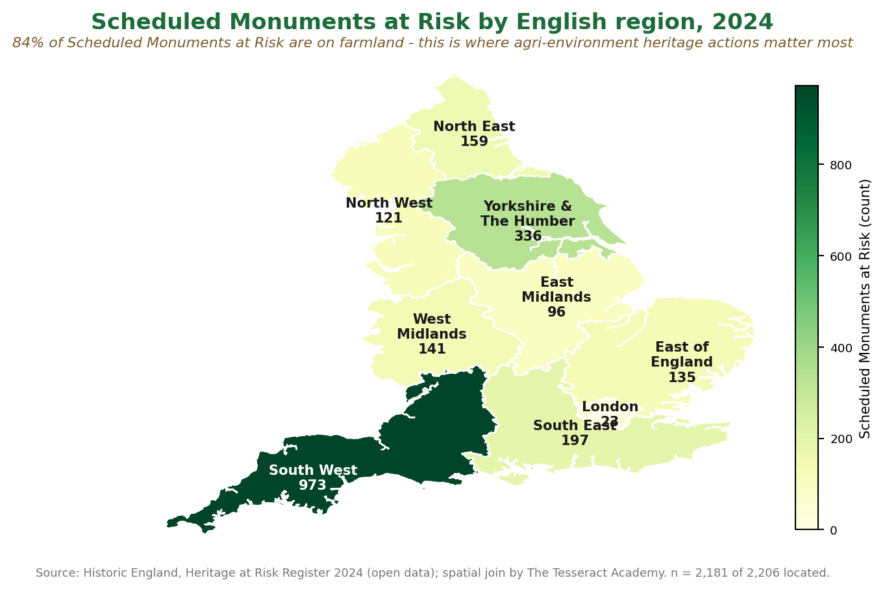

An accessible briefing demonstrator. Figures are drawn from published Natural England
and Historic England sources.
![Infographic: agri-environment heritage actions deliver value for nature and for people. 75 percent of Scheduled Monuments are on farmland; around 1,200 monuments removed from the Heritage at Risk Register; 330,000 hectares of heritage managed. A co-benefit wheel shows biodiversity, soil and carbon, water, landscape, access and wellbeing, and learning and volunteering. The heritage sector adds 36.6 billion pounds to the economy each year; heritage visiting saves the NHS an estimated 193.2 million pounds; 1.25 million school visits a year. Linked to the Environmental Improvement Plan goals Restored nature and Access to nature.](AES_Heritage_ForPeople_Infographic.png)
Where heritage at risk is concentrated

Map: Historic England Heritage at Risk Register 2024 (open data), spatial join by The Tesseract Academy.
Download the briefing note (PDF)